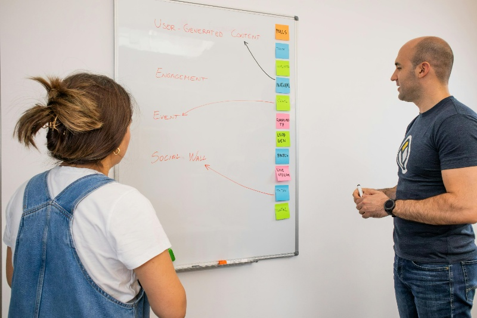

🌐Hoy en día, las redes sociales no son un lujo, sino una herramienta esencial para cualquier emprendedor que quiera dar a conocer su proyecto, conectar con clientes potenciales y construir una comunidad sólida alrededor de su marca. Ya no se trata solo de “estar presente”, sino de usar estratégicamente cada plataforma para generar confianza, visibilidad y ventas reales.
No es necesario ser un experto en marketing digital para comenzar. Con conocimiento básico, constancia y una estrategia sencilla, puedes lograr un gran impacto. Este apartado te enseñará a elegir las plataformas adecuadas, crear contenido atractivo y aprovechar al máximo estos canales, sin necesidad de invertir grandes sumas de dinero.
💡 Recuerda:
-hoy la atención de tu público está en el celular. Si no estás ahí, simplemente no existes para ellos.
-Elige la red donde está tu cliente, no donde está la moda.
Plataformas a Considerar
📱No todas las redes sociales son iguales ni funcionan igual para todos los tipos de negocio. Por eso, es clave elegir las plataformas que mejor se adapten a tu público objetivo y al estilo de tu emprendimiento.
Las más recomendadas:
Ideal para llegar a un público amplio y variado. Permite crear una página de tu negocio, hacer publicaciones con fotos, videos, promociones y usar herramientas como Messenger para responder dudas en tiempo real.
👉 Ejemplo: Si vendes productos artesanales, puedes mostrar tu catálogo en Facebook e interactuar con tus compradores.
Visual, emocional y perfecta para conectar con audiencias jóvenes o creativas. Funciona muy bien para marcas personales, moda, gastronomía, turismo, manualidades o belleza.
👉 Ejemplo: Un emprendedor de postres caseros puede subir fotos llamativas de sus productos con historias detrás de cada receta.
📌TikTok
Plataforma ideal para contenido corto y creativo. Aunque empezó con jóvenes, hoy la usan públicos de todas las edades.
👉 Ejemplo: Una persona que enseña trucos para ahorrar dinero puede subir videos útiles y ganar seguidores interesados en sus consejos.
📌WhatsApp Business
Muy útil para atención directa y ágil. Puedes usarlo para responder consultas, enviar catálogos, confirmar pedidos y mantener la relación con tus clientes.
👉 Ejemplo: Si vendes ropa por catálogo, puedes compartir novedades por listas de difusión.
Si tu emprendimiento está orientado a servicios profesionales o empresas (consultoría, formación, coaching, etc.), es ideal para generar alianzas, networking y posicionarte como experto.
👉 Ejemplo: Un consultor que da talleres puede compartir consejos en publicaciones y atraer nuevos clientes.
🔖 Tip práctico:
No necesitas estar en todas las redes. Elige máximo 2 o 3, pero mantén constancia en las publicaciones y cuida la calidad del contenido.
Estrategia de contenido

Estar en redes sociales no basta. La clave está en crear contenido que realmente conecte con las personas, les aporte valor y motive a seguirte o comprarte.✍️
¿Qué hace atractivo un contenido?
1. Que sea útil
Enseña algo, responde una duda o resuelve un problema común de tu público.
✅ Ejemplo: Si vendes productos naturales, puedes hacer una publicación explicando cómo elegir un buen aceite esencial.
2. Es visualmente llamativo
Usa imágenes de buena calidad, colores agradables, videos cortos, y textos claros.
✅ Ejemplo: Un post con una foto bonita de tu producto y una frase clave en negrilla llama más la atención que solo texto.
3. Cuenta historias
Las personas conectan con emociones. Comparte tu historia como emprendedor, la historia de un cliente satisfecho o los desafíos que has superado.
✅ Ejemplo: "Cuando empecé este negocio tenía solo una mesa y dos productos... hoy ya llegamos a más de 100 clientes felices."
4. Incluye llamados a la acción (CTA)
Frases que invitan a comentar, compartir, comprar o visitar tu perfil.
✅ Ejemplo: “¿Cuál de estos te gusta más? ¡Comenta abajo!” o “Haz tu pedido por mensaje directo 📩”.
💡 Tip útil:
Si no sabes qué publicar, piensa en las preguntas que más te hacen tus clientes. Responde una en cada post. Eso educa y genera confianza.